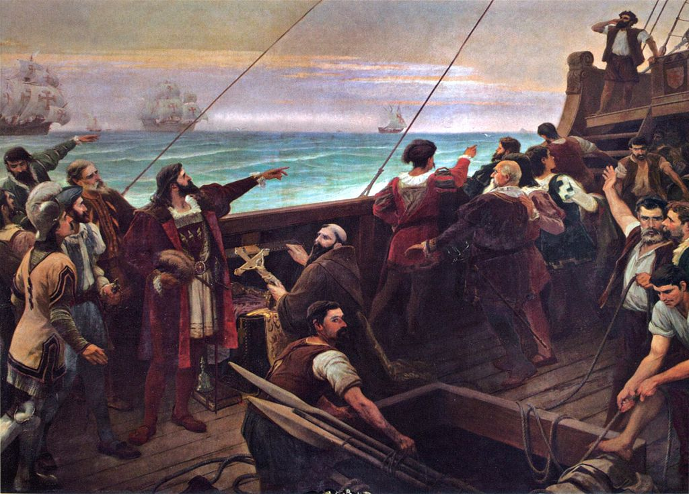
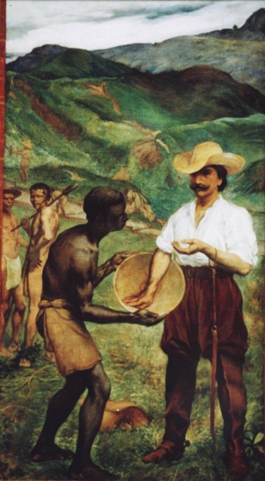

O Brasil Colônia, na História do Brasil, é a época que compreende o período de 1530 a 1822.
Este período começou quando o governo português enviou ao Brasil a primeira expedição colonizadora chefiada por Martim Afonso de Souza.
Em 1532, ele fundou o primeiro núcleo de povoamento, a Vila de São Vicente, no litoral do atual estado de São Paulo.
O descobrimento do Brasil aconteceu em 1500, em meio ao processo das grandes navegações e expansão marítima portuguesas. As primeiras caravelas a aportar em solo brasileiro eram lideradas por Pedro Álvares de Cabral.
É importante pontuar que a chegada dos portugueses não significou nem de perto uma rápida consolidação do domínio colonial. Na verdade, o Período Pré-Colonial foi marcado por um relativo desinteresse da coroa portuguesa por explorar efetivamente essas terras.
Isso porque, o sucesso de Vasco da Gama ao traçar uma nova rota às Índias e o crescente comércio de especiarias consequentes dessa rota - era o objetivo central dos portugueses e onde concentraram seus investimentos.
Sendo assim, nos primeiros anos desde o descobrimento, investir no comércio com as Índias ainda era mais lucrativo que focar na exploração da América portuguesa.
O Período Pré-Colonial começa em 1500 com o descobrimento do Brasil e vai até 1532, com a chegada das primeiras expedições colonizadoras comandadas por Martim Afonso de Souza.
Esse período foi marcado por um relativo desinteresse dos portugueses pelo território recém descoberto e por inúmeras tentativas de invasão de outros países europeus, como França, Inglaterra e Holanda.
Já a partir de 1530, o comércio português com as Índias entrava em declínio. Ao mesmo tempo, o fluxo de tentativas de invasões por parte dos contrabandistas de pau-brasil se intensificou, e as expedições portuguesas enviadas para repelir os invasores não tiveram muita eficácia mediante a extensão do território.
Essa confluência de fatores fez com que o rei de Portugal, D. João III, decidisse por iniciar efetivamente a colonização do Brasil. Em 1530, Martim Afonso de Souza parte com 50 embarcações repletas de pessoas, ferramentas e sementes, para enfim começar a povoar o Brasil Colônia.

Pedro Álvares Cabral descobrindo o Brasil
Com o declínio do comércio de especiarias, as atenções portuguesas voltaram-se para a América portuguesa e as constantes tentativas de invasão tornaram-se uma preocupação. É nesse contexto que em 1534, o então Rei Dom João III inaugura o sistema das capitanias hereditárias, na intenção de começar o processo de povoamento na colônia.
As capitanias hereditárias já haviam sido implementadas pelos portugueses em outros territórios coloniais, como a Ilha da Madeira e Cabo Verde. No Brasil, o rei dividiu a faixa litorânea em 15 lotes, 14 capitanias e entregou-as a 12 donatários, nobres portugueses que tinham a posse útil das terras.
A posse das capitanias era passada aos descendentes dos donatários e estes donatários podiam entregar pedaços de terras, as chamadas sesmarias, para terceiros.
O sistema das capitanias hereditárias foi uma estratégia interessante para o governo português, uma vez que povoou a colônia sem grandes custos para o Estado.
Pouco mais de 10 anos depois da doação das terras por parte do rei, o sistema das capitanias hereditárias ainda não funcionava muito bem. Isso porque, a maioria dos donatários não veio para o Brasil imediatamente, deixando buracos vazios no litoral, o que enfraquecia sua função de defesa.
As capitanias viviam até então em um regime extremamente desorganizado, com falhas na comunicação entre os donatários e falta de recursos. Mediante a esse cenário, Dom João III acreditou que a solução viria da centralização da administração em uma autoridade real, fundando assim em 1548 o chamado Governo-Geral.
O sistema de Governo Geral foi criado em 1548, pela Coroa, com o objetivo de organizar a administração colonial.
O primeiro governador foi Tomé de Souza (1549 a 1553), que recebeu do governo português, um conjunto de leis. Estas determinavam as funções administrativas, judicial, militar e tributária do Governo Geral.
O segundo governador geral foi Duarte da Costa (1553 a 1558), e o terceiro foi Mem de Sá (1558 a 1572).
Em 1572, depois da morte de Mem de Sá e de seu sucessor Dom Luís de Vasconcelos, o governo português dividiu o Brasil em dois governos cuja unificação só voltou em 1578:
Governo do Norte, com sede em Salvador
Governo do Sul, com sede no Rio de Janeiro
Em 1580, Portugal e todas as suas colônias, inclusive o Brasil, ficaram sob o domínio da Espanha, situação que perdurou até 1640. Este período é conhecido como Unificação Ibérica.
Em 1621, ainda sob o domínio espanhol, o Brasil foi novamente dividido em dois estados: o Estado do Maranhão e o Estado do Brasil. Essa divisão durou até 1774, quando o Marquês do Pombal decretou a unificação.
Fundamentalmente três grandes grupos étnicos, o índio, negro africano e o branco europeu, principalmente o português, entraram na formação da sociedade colonial brasileira.
Os portugueses que vieram para o Brasil pertenciam a várias classes sociais em Portugal. A maioria era formada por elementos da pequena nobreza e do povo.
Também é preciso ter em conta que as tribos indígenas tinham línguas e culturas distintas. Algumas eram inimigas entre si e isto era usado pelos europeus quando desejavam guerrear contra os portugueses.
Da mesma forma, os negros trazidos como escravos da África possuíam crenças, idiomas e valores que foram sendo absorvidos pelos portugueses e indígenas.
No Brasil Colônia, o engenho era o centro dinâmico de toda a vida social. Isso possibilitava o “senhor da casa grande” concentrar em torno de si, grande quantidade de indivíduos e ter a autoridade máxima, o prestígio e o poder local.
Em torno do engenho viviam os mulatos, geralmente filhos dos senhores com escravas, o padre, os negros escravos, o feitor, o mestre do açúcar, os trabalhadores livres, etc.
Junto com as capitanias hereditárias e seus donatários, começa o plantio de cana-de-açúcar no Brasil. Os portugueses esperavam que ao introduzir o cultivo da cana, conseguissem firmar a colonização, garantir a presença portuguesa e com isso, impedir as invasões externas e ameaças estrangeiras.
Os holandeses desempenhavam papel importante no ciclo da cana no Brasil. Primeiro, faziam empréstimos para que portugueses cultivassem a cana na América Espanhola. Além disso, eram eles quem compravam a maior parte da matéria-prima, refinavam e vendiam o açúcar.
Quando em meados do século XVII, foram expulsos do litoral do nordeste brasileiro e depois de algumas tentativas frustradas de invadir o território brasileira, os holandeses conquistam a região do Caribe.
É nesse momento que começam a plantar sua própria cana-de-açúcar e entre os anos de 1680 e 1700 param de comprar a cana dos portugueses. Além disso, passam a controlar o transporte e comércio do produto e dominam o mercado consumidor europeu, iniciando a crise do ciclo da cana-de-açúcar no Brasil.
Com a descoberta do ouro no final do século XVII, a economia passou a se voltar para a extração do minério, principalmente na região de Minas Gerais.
A partir do final do século XVII, a descoberta do ouro impulsionou a extração e exportação dos minérios, tornando essa atividade a principal desta fase colonial no país.
As primeiras grandes reservas de ouro do Brasil foram descobertas pelos bandeirantes na região que hoje é Minas Gerais. Portugal passou décadas explorando e canalizando esses recursos tão valiosos. A metrópole cobrava altos impostos em cima da atividade, como o chamado “quinto”, taxa de 20% sob todo ouro retirado das minas.
Desde a segunda metade do século XVIII, o ouro começou a ficar mais escasso. Entretanto, Portugal não diminuiu os impostos sobre ele, já que o país havia acabado de passar por um terremoto e precisava de recursos para se restabelecer. Ao contrário, decretou a chamada “derrama”, imposto que obrigava cada região aurífera (extratora de ouro) a recolher uma tonelada e meia de ouro por ano e entregá-lo para Portugal.

"O ciclo do Ouro" - Rodolfo Amoedo